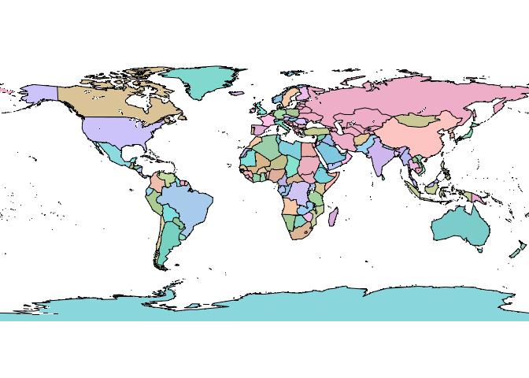

The goal of wince is to …
TODO
You can install the development version of wince like so:
# FILL THIS IN! HOW CAN PEOPLE INSTALL YOUR DEV PACKAGE?This is a basic example which shows you how to solve a common problem:
library(wince)
## basic example code
f <- write_nc(volcano, extent = c(0, 87, 0, 61), zvar = -1, z_type = "elevation")
tidync::tidync(f)
#>
#> Data Source (1): file1d64e43cade63f.nc ...
#>
#> Grids (4) <dimension family> : <associated variables>
#>
#> [1] D1,D2,D0 : volcano **ACTIVE GRID** ( 5307 values per variable)
#> [2] D0 : time
#> [3] D1 : x
#> [4] D2 : y
#>
#> Dimensions 3 (all active):
#>
#> dim name length min max start count dmin dmax unlim coord_dim
#> <chr> <chr> <dbl> <dbl> <dbl> <int> <int> <dbl> <dbl> <lgl> <lgl>
#> 1 D0 time 1 -1 -1 1 1 -1 -1 TRUE TRUE
#> 2 D1 x 87 0.5 86.5 1 87 0.5 86.5 FALSE TRUE
#> 3 D2 y 61 0.5 60.5 1 61 0.5 60.5 FALSE TRUE
png <- system.file("textures/world.png", package = "rgl", mustWork = TRUE)
arr <- aperm(png::readPNG(png), c(2, 1, 3))
arr <- arr[,ncol(arr):1, ]
f <- write_nc(arr, extent = c(-180, 180, -90, 90), data_name = "world_image")
terra::plotRGB(terra::rast(f) * 256)
maps::map(add = T)
## in future (we need -expand too though for this palette PNG, or nativeRaster etc)
# imvrt <- vapour::vapour_vrt(png, extent = c(-180, 180, -90, 90), projection = "OGC:CRS84", bands = 1:3)
# arr <- whatarelief::imagery(source = imvrt, extent = ex <- c(-1, 1, -1, 1) * 1e7, projection = "+proj=laea")
# write_nc(arr, extent = ex, projection = "+proj=laea")Please note that the wince project is released with a Contributor Code of Conduct. By contributing to this project, you agree to abide by its terms.